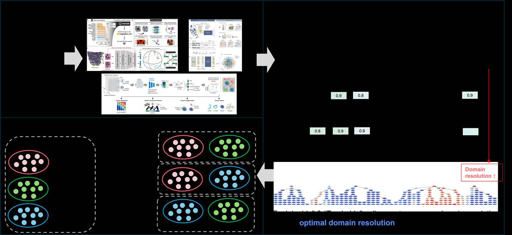

Donghee Kim 김동희
AI Research Engineer
Biomedical Research Institute, Seoul National University Hospital
I develop machine-learning methods and reusable research systems for biomedical data. My recent work spans single-cell foundation models, spatial transcriptomics, and agent-based quality control for clinical data.
I work across the full research cycle—from framing a problem and designing a method to implementing experiments, scaling computation, and releasing reproducible software. Earlier work includes longitudinal clinical forecasting and large-scale time-series analysis.
- Research interests
- Foundation models · Multimodal learning · Biomedical AI · Research systems
Updates
News
Current work
Selected Research

QCAgent
A multi-agent framework for quality control in CDM and KR-CDI hospital-data integration. I am responsible for the agent layer: receiving queries through vLLM and backend services, orchestrating specialized agents with LangGraph, and connecting them to existing Airflow APIs.
Private research project
Research output
Publications
Profiling short-term longitudinal severity progression and associated genes in COVID-19 patients using EHR and single-cell analysis
Seung Hwan Bae*, Donghee Kim*, Jaeyeon Jang, et al.
Scientific Reports, 15:21098 · *Equal contribution · Paper
Identifying AC Control Patterns From a Massive Longitudinal Log Dataset Using Deep Clustering
Seunghwan Bae, Donghee Kim, Seokhwan Seong, Jaeyeon Jang, et al.
IEEE Access, 13:56195–56209 · Paper
Beyond papers
Research Engineering
Research compute platform
Built isolated Docker environments for researchers and a role-aware command wrapper for administrators and users. Added lab-wide monitoring with Prometheus and Grafana.
Pathology AI & GPU analysis
Explored WSI patch augmentation and converted single-cell imaging analyses to GPU-accelerated workflows, shortening revision-scale experiments for a multiplexed imaging study.
Background
Experience & Education
Current
AI Research Engineer · Technical Research Personnel
Biomedical Research Institute, Seoul National University Hospital
Biomedical AI methods, research software, and compute infrastructure.
Graduate
B.S.–M.S. Linked Program
Kyungpook National University · Computer Science & Engineering
Longitudinal clinical modeling and large-scale time-series research.
Undergraduate
Early projects & programs
LikeLion student community · India summer program · LG webOS online internship.